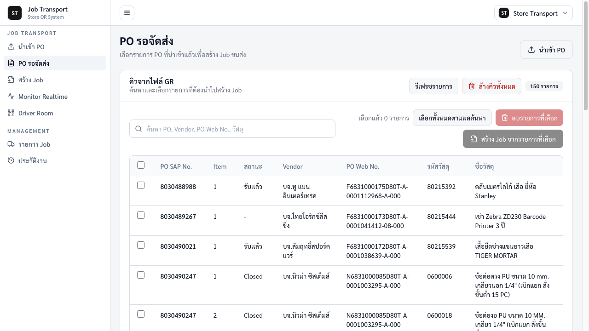
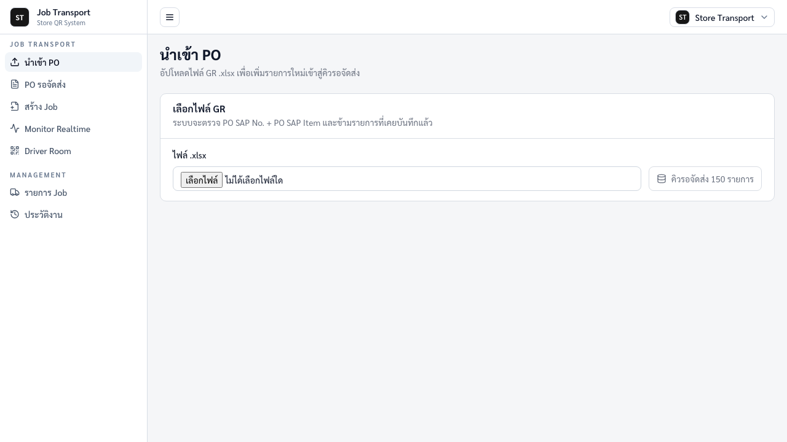
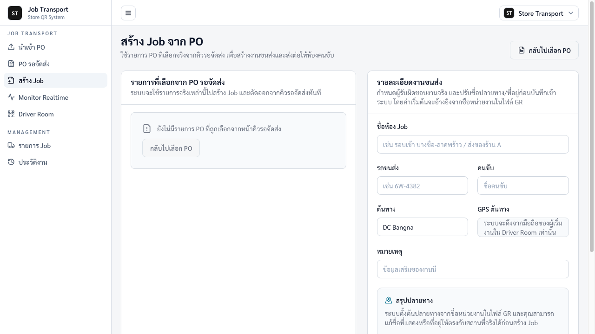
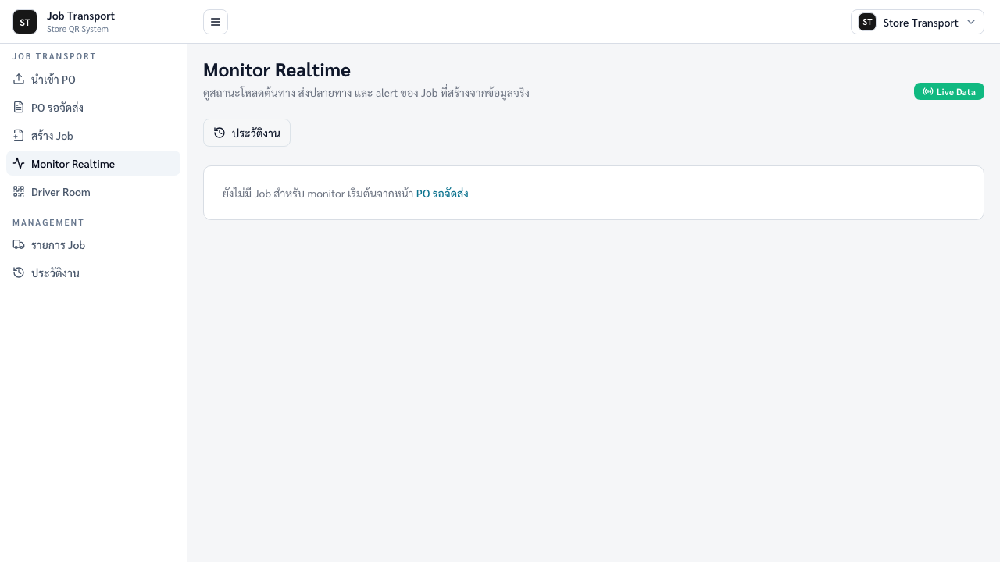
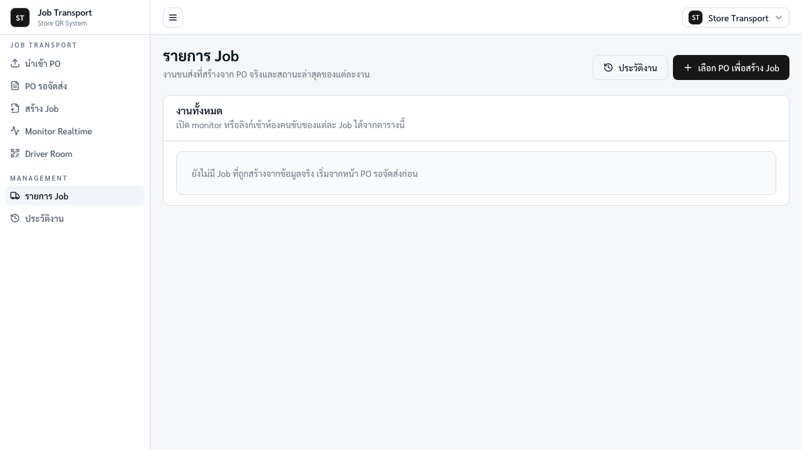
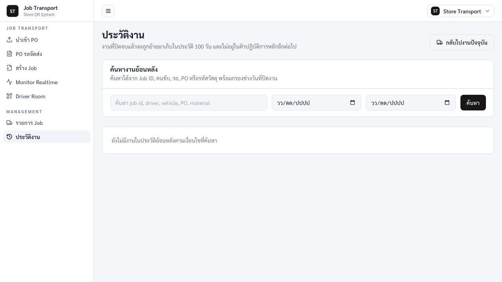
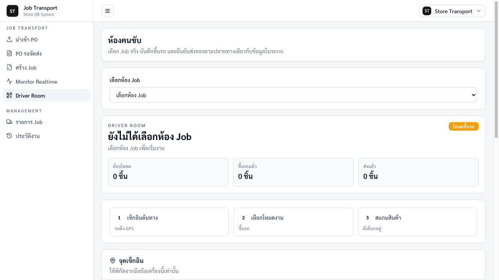
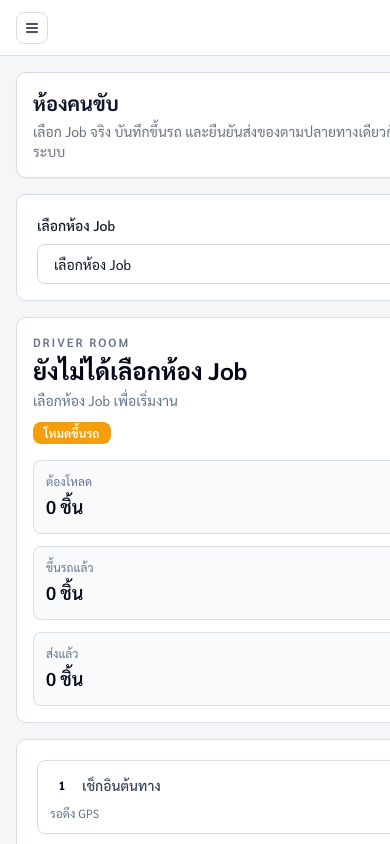

Project Stock QR / Job Transport
คู่มือการใช้งานระบบขนส่งสำหรับ Admin และคนขับ
คู่มือนี้จัดทำจากเว็บจริง https://project-stock-qr.vercel.app พร้อมภาพหน้าจอประกอบ เพื่อให้ทีมงานใช้เป็นขั้นตอนอ้างอิงตั้งแต่นำเข้า PO, สร้าง Job, ติดตามงาน ไปจนถึงการสแกนหน้างานของคนขับ
สำหรับ Admin
นำเข้าไฟล์ GR, จัดการคิว PO, สร้าง Job ขนส่ง, ดู Monitor Realtime, ตรวจรายการงาน และดูประวัติงานย้อนหลัง
สำหรับคนขับ
สแกน QR Code ที่ Admin แสดงให้, เปิดหน้าคนขับบนมือถือ, เช็กอิน GPS และสแกนสินค้าในงานนั้น
ภาพรวมระบบ
ระบบนี้ใช้สำหรับควบคุมงานขนส่งจากรายการ PO ที่นำเข้าจากไฟล์ GR โดย Admin จะเลือก PO เพื่อสร้าง Job แล้วเปิด QR Code ของ Job นั้นให้คนขับสแกนจากมือถือ เมื่อสแกนแล้วคนขับจะเข้าหน้า Driver Room ของงานนั้นโดยตรง ไม่ต้องค้นหาเมนูเอง
| เมนู |
ผู้ใช้หลัก |
ใช้ทำอะไร |
| นำเข้า PO |
Admin |
อัปโหลดไฟล์ GR .xlsx และยืนยันเพิ่มรายการใหม่เข้าคิวรอจัดส่ง |
| PO รอจัดส่ง |
Admin |
ค้นหา เลือก ลบ หรือส่งรายการ PO ไปสร้าง Job |
| สร้าง Job |
Admin |
ใส่ข้อมูลรถ คนขับ ต้นทาง หมายเหตุ และปรับชื่อ/ที่อยู่ปลายทางก่อนบันทึกงานจริง |
| Monitor Realtime |
Admin |
ดูความคืบหน้าโหลดต้นทาง ส่งปลายทาง และ alert ระหว่างทำงาน |
| Driver Room |
คนขับ |
เปิดจาก QR Code ที่ Admin ให้ แล้วเช็กอิน GPS และสแกนสินค้าในหน้ามือถือ |
ข้อควรจำ: เมื่อ Admin กดสร้าง Job จริง รายการ PO ที่เลือกจะถูกตัดออกจากคิวรอจัดส่งและย้ายไปอยู่ในงานขนส่งนั้นทันที
ข้อมูลตัวอย่างสำหรับฝึกใช้งาน
ชุดข้อมูลนี้เป็นข้อมูลสมมติสำหรับสาธิตขั้นตอนในคู่มือเท่านั้น สามารถใช้ประกอบการอบรมหรือทดลอง flow ตั้งแต่การนำเข้า GR ไปจนถึงการสแกนของคนขับ โดยไฟล์ Excel ตัวอย่างอยู่ที่ manual_output/sample-gr-for-training.xlsx
1. ไฟล์ GR ตัวอย่าง
| PO SAP No. |
Item |
Vendor |
ปลายทาง |
รหัสวัสดุ |
ชื่อวัสดุ |
จำนวน |
| 8099001001 |
1 |
บจ.ตัวอย่าง ซัพพลาย |
สาขาบางนา |
DEMO-MAT-001 |
ป้าย QR สำหรับชั้นวางสินค้า |
20 |
| 8099001001 |
2 |
บจ.ตัวอย่าง ซัพพลาย |
สาขาบางนา |
DEMO-MAT-002 |
กล่องเอกสารสำหรับคลังย่อย |
12 |
| 8099001002 |
1 |
บจ.สาธิต อุปกรณ์ |
สาขาพระราม 2 |
DEMO-MAT-003 |
เครื่องสแกนบาร์โค้ดมือถือ |
3 |
| 8099001003 |
1 |
บจ.สาธิต อุปกรณ์ |
สาขาลาดพร้าว |
DEMO-MAT-004 |
สติกเกอร์บาร์โค้ดกันน้ำ |
50 |
| 8099001004 |
1 |
บจ.เดโม โลจิสติกส์ |
สาขารังสิต |
DEMO-MAT-005 |
ตะกร้าพลาสติกสำหรับแยกปลายทาง |
8 |
2. ตัวอย่างการเลือก PO เพื่อสร้าง Job
- Admin นำเข้าไฟล์ sample-gr-for-training.xlsx จากหน้า นำเข้า PO
- ไปหน้า PO รอจัดส่ง แล้วค้นหา 809900100 หรือ DEMO-MAT
- เลือกทั้ง 5 รายการ เพื่อสร้างงานขนส่งหนึ่งรอบ
- กด สร้าง Job จากรายการที่เลือก
3. รายละเอียด Job ตัวอย่าง
| ช่องในระบบ |
ค่าตัวอย่าง |
คำอธิบาย |
| ชื่อห้อง Job |
DEMO รอบเช้า บางนา-พระราม2-ลาดพร้าว |
ชื่อที่ Admin ใช้ตรวจงาน และแสดงในหน้าคนขับหลังสแกน QR |
| รถขนส่ง |
DEMO-TRUCK-01 |
ทะเบียน/รหัสรถสำหรับรอบส่งของ |
| คนขับ |
คุณสมชาย ตัวอย่าง |
ชื่อคนขับที่จะแสดงใน QR/Driver Room ของงานนี้ |
| ต้นทาง |
DC Bangna |
จุดเริ่มโหลดสินค้า คนขับต้องเช็กอิน GPS ที่นี่ก่อนสแกนขึ้นรถ |
| หมายเหตุ |
ใช้สำหรับฝึกอบรมเท่านั้น ไม่ใช่ข้อมูลจริง |
ช่วยป้องกันการสับสนกับงานจริง |
4. ปลายทางและลำดับสแกนตัวอย่าง
| ลำดับ |
ปลายทาง |
รหัสที่ใช้สแกน/คีย์ |
จำนวน |
ขั้นตอนที่ควรทำ |
| 1 |
สาขาบางนา |
DEMO-MAT-001, DEMO-MAT-002 |
32 |
เช็กอินปลายทางบางนา แล้วสแกนส่ง 2 รายการนี้ |
| 2 |
สาขาพระราม 2 |
DEMO-MAT-003 |
3 |
เปลี่ยนปลายทางเป็นพระราม 2 เช็กอิน GPS แล้วสแกนส่ง |
| 3 |
สาขาลาดพร้าว |
DEMO-MAT-004 |
50 |
เปลี่ยนปลายทางเป็นลาดพร้าว เช็กอิน GPS แล้วสแกนส่ง |
| 4 |
สาขารังสิต |
DEMO-MAT-005 |
8 |
เปลี่ยนปลายทางเป็นรังสิต เช็กอิน GPS แล้วสแกนส่ง |
สำหรับการสาธิต ให้ Admin เปิด QR ของ Job ตัวอย่างให้คนขับสแกนก่อน เมื่อเข้าหน้ามือถือแล้ว หากไม่ใช้กล้องสแกนสินค้า ให้คีย์รหัส DEMO-MAT-001 ถึง DEMO-MAT-005 ในช่อง “รหัสสินค้า / PO / registry key” แล้วกดบันทึกตามโหมดที่เลือก
คู่มือฝั่ง Admin
1. เปิดระบบและดูเมนูหลัก
- เข้าเว็บ https://project-stock-qr.vercel.app
- หน้าเริ่มต้นจะเข้ามาที่เมนู PO รอจัดส่ง หากมีข้อมูลอยู่แล้วจะเห็นตาราง PO ในคิว
- ใช้เมนูด้านซ้ายเพื่อไปยัง นำเข้า PO, สร้าง Job, Monitor Realtime, Driver Room, รายการ Job และประวัติงาน

ภาพที่ 1: หน้า PO รอจัดส่งและเมนูหลักของ Admin
2. นำเข้า PO จากไฟล์ GR
- กดเมนู นำเข้า PO
- กดช่อง ไฟล์ .xlsx แล้วเลือกไฟล์ GR ที่ต้องการนำเข้า
- ระบบจะอ่านข้อมูลจาก Sheet แรก ตรวจคอลัมน์ PO SAP No. และ PO SAP Item และตรวจรายการซ้ำให้อัตโนมัติ
- ตรวจผล preview เช่น ชื่อไฟล์, Sheet, จำนวนรายการใหม่ และจำนวนที่มีอยู่แล้ว
- ถ้าข้อมูลถูกต้อง ให้กด ยืนยันนำเข้ารายการใหม่
- หลังนำเข้าสำเร็จ กด ไปหน้า PO รอจัดส่ง เพื่อเลือก PO ไปสร้าง Job
| เงื่อนไขตรวจสอบ |
ผลลัพธ์ในระบบ |
| ไฟล์ไม่ใช่ .xlsx |
ระบบแจ้งว่า “รองรับเฉพาะไฟล์ .xlsx เท่านั้น” |
| ไม่พบ PO SAP No. หรือ PO SAP Item |
ระบบแจ้งคอลัมน์ที่ขาด และไม่ให้นำเข้า |
| PO SAP No. + Item เคยมีในระบบแล้ว |
ระบบข้ามรายการซ้ำ ไม่นำเข้าซ้ำ |

ภาพที่ 2: หน้านำเข้า PO จากไฟล์ GR .xlsx
3. ค้นหาและเลือก PO เพื่อสร้าง Job
- เข้าเมนู PO รอจัดส่ง
- ใช้ช่องค้นหาเพื่อหา PO SAP No., Vendor, PO Web No. หรือชื่อ/รหัสวัสดุ
- ติ๊ก checkbox ด้านหน้ารายการที่ต้องการสร้าง Job
- ถ้าต้องการเลือกทั้งหมดตามผลค้นหา ให้กด เลือกทั้งหมดตามผลค้นหา
- ตรวจจำนวนตรงคำว่า เลือกแล้ว ... รายการ
- กด สร้าง Job จากรายการที่เลือก เพื่อไปหน้ากรอกรายละเอียดงาน
ปุ่ม ลบรายการที่เลือก และ ล้างคิวทั้งหมด ใช้ลบข้อมูลออกจากคิวรอจัดส่ง ควรใช้เฉพาะเมื่อยืนยันแล้วว่ารายการนั้นไม่ต้องนำไปสร้าง Job
4. กรอกรายละเอียดและสร้าง Job
- ตรวจส่วน รายการที่เลือกจาก PO รอจัดส่ง ให้แน่ใจว่ารายการถูกต้อง
- กรอก ชื่อห้อง Job เช่น “รอบเช้า บางซื่อ-ลาดพร้าว” หรือชื่อรอบงานที่ทีมเข้าใจร่วมกัน
- กรอก รถขนส่ง และ คนขับ
- ตรวจหรือแก้ ต้นทาง ค่าเริ่มต้นคือ DC Bangna
- ใส่ หมายเหตุ หากมีข้อกำหนดพิเศษของงาน
- ตรวจ สรุปปลายทาง ระบบตั้งต้นจากชื่อหน่วยงานในไฟล์ GR สามารถแก้ชื่อปลายทางและที่อยู่/โลเคชันให้ตรงกับสถานที่จริง
- เมื่อทุกอย่างพร้อม กด สร้าง Job จริงจากรายการที่เลือก
- หลังสร้างสำเร็จ ระบบจะพาไปหน้า Monitor ของ Job นั้นทันที
การกดสร้าง Job เป็นการบันทึกงานจริง และรายการ PO ที่เลือกจะถูกตัดออกจากคิวรอจัดส่ง

ภาพที่ 3: หน้าสร้าง Job และฟอร์มรายละเอียดงานขนส่ง
5. ติดตามงานใน Monitor Realtime
- เข้าเมนู Monitor Realtime
- เลือก Job ที่ต้องการติดตาม หากระบบมีหลายงาน
- ดูสถานะสำคัญ เช่น ยอดต้องโหลด, ขึ้นรถแล้ว, ส่งแล้ว, จุดเช็กอิน และ alert
- ในกรอบ ช่องทางเข้าหน้าคนขับ กด แสดง QR สำหรับคนขับ แล้วให้คนขับใช้มือถือสแกน QR นี้
- ใช้หน้านี้คุยกับทีมหน้างานเมื่อพบยอดไม่ตรงหรือมีการสแกนผิดปลายทาง
QR Code ที่แสดงใน Job จะเป็นลิงก์เข้า Driver Room ของงานนั้นโดยตรง คนขับไม่ต้องเลือกห้อง Job เอง หากสแกนไม่ได้ ให้ Admin ส่งลิงก์ใต้ QR ให้เปิดจากมือถือแทน

ภาพที่ 4: หน้า Monitor Realtime ในกรณีที่ยังไม่มี Job สำหรับ monitor
6. ดูรายการ Job ปัจจุบัน
- เข้าเมนู รายการ Job
- ตรวจงานที่สร้างจาก PO จริงและสถานะล่าสุดของแต่ละงาน
- ใช้ปุ่มของแต่ละแถวเพื่อเปิด Monitor หรือเปิด Driver Room ของ Job นั้น
- กด แสดง QR สำหรับคนขับ แล้วให้คนขับสแกนจากมือถือเมื่อพร้อมเริ่มงาน
- ถ้าคนขับสแกน QR ไม่ได้ ให้คัดลอก/ส่งลิงก์ Driver Room ของงานนั้นให้เปิดบนมือถือแทน

ภาพที่ 5: หน้ารายการ Job ในกรณีที่ยังไม่มี Job ที่สร้างไว้
7. ตรวจประวัติงาน
- เข้าเมนู ประวัติงาน
- ค้นหาได้จาก Job ID, คนขับ, รถ, PO หรือรหัสวัสดุ
- กรองช่วงวันที่ปิดงานได้ตามต้องการ
- งานที่ปิดจบแล้วจะถูกเก็บในประวัติ 100 วัน และไม่อยู่ในคิวปฏิบัติการหลัก

ภาพที่ 6: หน้าประวัติงานย้อนหลัง
คู่มือฝั่งคนขับ
1. สแกน QR ที่ Admin ให้
- Admin เปิดหน้า Monitor หรือรายการ Job แล้วกด แสดง QR สำหรับคนขับ
- คนขับใช้มือถือสแกน QR Code นั้น
- ระบบจะเปิดหน้า Driver Room ของ Job นั้นทันที และหน้าจอนี้รองรับมือถืออยู่แล้ว
- ตรวจชื่อห้อง Job, รถ, คนขับ และยอดรวม ต้องโหลด/ขึ้นรถแล้ว/ส่งแล้ว
- ถ้าสแกน QR ไม่ได้ ให้ Admin ส่งลิงก์ใต้ QR ให้เปิดบนมือถือแทน

ภาพที่ 7: Driver Room บนจอใหญ่หรือแท็บเล็ต

ภาพที่ 8: หน้าคนขับบนมือถือ หลังสแกน QR จาก Admin
2. เช็กอิน GPS ต้นทาง
- ไปที่การ์ด จุดเช็กอิน
- กด เช็กอินต้นทาง
- เมื่อเบราว์เซอร์ถามสิทธิ์ตำแหน่ง ให้กดอนุญาต
- รอให้ระบบขึ้นข้อความสำเร็จและแสดงพิกัดล่าสุด
ระบบจะล็อกการสแกนไว้จนกว่าจะเช็กอิน GPS ต้นทางสำเร็จ เพื่อยืนยันว่าเริ่มโหลดสินค้าจากจุดต้นทางจริง
3. สแกนสินค้าโหมดขึ้นรถ
- เลือกโหมด ขึ้นรถ
- กด เปิดกล้อง แล้วอนุญาตสิทธิ์กล้อง
- เล็งกรอบไปที่ QR Code หรือ Barcode ของสินค้า
- เมื่อระบบอ่านรหัสได้ ระบบจะบันทึกให้อัตโนมัติ
- ถ้าเปิดกล้องไม่ได้หรือรหัสอ่านยาก ให้กรอกรหัสในช่อง รหัสสินค้า / PO / registry key แล้วกด บันทึก
- ตรวจยอด ขึ้นรถแล้ว ว่าเพิ่มขึ้นตามจำนวนที่สแกน
4. เช็กอินปลายทางและสแกนส่งของ
- เมื่อถึงปลายทาง ให้เปลี่ยนโหมดเป็น ส่งปลายทาง
- เลือก ปลายทางปัจจุบัน ให้ตรงกับสถานที่จริง
- กด เช็กอินปลายทาง และอนุญาตสิทธิ์ตำแหน่ง
- หลังเช็กอินสำเร็จ จึงเริ่มสแกนสินค้าเพื่อส่งปลายทางนั้นได้
- สแกน QR Code/Barcode หรือกรอกรหัสด้วยมือ แล้วกดบันทึก
- ตรวจยอด ส่งแล้ว และรายการในห้องให้ตรงกับของที่ส่งจริง
ก่อนสแกนส่งของ ต้องเลือกปลายทางให้ถูกต้องเสมอ เพราะระบบจะนับการส่งตามปลายทางที่เลือกอยู่ในขณะนั้น
5. ตรวจยอดในห้อง
ส่วน รายการในห้อง จะแสดงข้อมูลแบบสรุปตามปลายทาง ตัวเลขจะอยู่ในรูปแบบ ส่งแล้ว / ขึ้นรถแล้ว / ต้องโหลด เพื่อให้ตรวจยอดได้เร็วระหว่างทำงาน
| สถานการณ์ |
วิธีตรวจ |
| ของขึ้นรถครบหรือยัง |
ดูยอด “ขึ้นรถแล้ว” เทียบกับ “ต้องโหลด” |
| ของปลายทางนี้ส่งครบหรือยัง |
เลือกปลายทาง แล้วดูตัวเลขในรายการย่อยของปลายทางนั้น |
| สแกนแล้วมี alert |
อ่านข้อความแจ้งเตือนในกล่องผลลัพธ์ และติดต่อ Admin หากรหัสไม่อยู่ใน Job หรือสแกนผิดโหมด |
ปัญหาที่พบบ่อย
Admin
| ปัญหา |
วิธีแก้ |
| นำเข้าไฟล์ไม่ได้ |
ตรวจว่าเป็นไฟล์ .xlsx และมีคอลัมน์ PO SAP No. กับ PO SAP Item |
| รายการในไฟล์ไม่ถูกนำเข้า |
ระบบอาจพบว่า PO SAP No. + Item ซ้ำกับข้อมูลเดิม หรือเคยถูกสร้าง Job แล้ว |
| กดสร้าง Job ไม่ได้ |
ต้องเลือก PO จากหน้า PO รอจัดส่งก่อน แล้วจึงเข้าหน้าสร้าง Job |
| Monitor ไม่มีงาน |
ยังไม่มี Job ที่สร้างอยู่ ให้เริ่มจากเลือก PO แล้วสร้าง Job จริงก่อน |
คนขับ
| ปัญหา |
วิธีแก้ |
| สแกน QR เข้าหน้างานไม่ได้ |
ให้ Admin ส่งลิงก์ใต้ QR ให้เปิดบนมือถือแทน หรือตรวจว่า QR เป็นของ Job ล่าสุด |
| ปุ่มเปิดกล้องสแกนสินค้าถูกล็อก |
เช็กอิน GPS ต้นทางก่อน หากอยู่โหมดส่งปลายทางให้เช็กอิน GPS ปลายทางก่อน |
| เปิดกล้องไม่ได้ |
กดอนุญาตสิทธิ์กล้องในเบราว์เซอร์ หรือใช้การกรอกรหัสด้วยมือแทน |
| GPS ไม่ขึ้น |
เปิด Location/GPS ของมือถือ อนุญาตสิทธิ์ตำแหน่งให้เบราว์เซอร์ และลองกดเช็กอินอีกครั้งในพื้นที่รับสัญญาณได้ |
| ไม่เห็นห้อง Job |
ให้ Admin เปิด QR/ลิงก์ Driver Room ของงานนั้นใหม่ เพราะคนขับควรเข้าจาก QR เฉพาะ Job ไม่ต้องเลือกห้องเอง |